You asked how polished the armour sets really are, and what small pass would take them as far as they can go without scrapping anything. I checked all 29 in the real game. The shapes are good. What surrounds the shapes was never finished.
"I don't want to completely scrap everything. It's more so a way to really see what's the kind of small polish pass that we can do to massively bring it to the most extreme and awesome level."
This page shows what I found, the pass I'd recommend, and every set as it is today beside a working draft of the pass. The pictures are from the game itself, shot on GitHub's machines at your window size. You approved it on 10 November. What has been built since is in Built since your yes, just below, with one new decision for you.
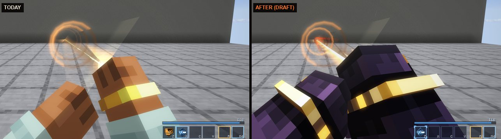
You said: go with the full plan and all recommendations. This is what is built, what the real game has shown of it on GitHub’s machines, and the three things only you can do. It all sits on its own branch. Nothing is merged.
| Stage | What it does | Where it stands |
|---|---|---|
| 0. Faults | Your arms, wrists and legs wear the armour in every first-person view our own code draws. Your own charge shows on your own arm. The sheen no longer crosses armour in the dark. | Built. Seen in the game, all 29. |
| 1. Light | Plates part from each other by day. From C-rank up the thing a stranger would name is lit after dark; E and D stay dark. | Built. Seen in the game, day and night. |
| 2. Hands | A glove, a cuff and a hand plate on every set, each in its own materials. | Built. Seen in the game, all 29. |
| 3. Plates | C-rank only: a gate on Gatewrought’s back, a vault door on Vaultbreaker’s, crystal on Shardcrown’s forearm. | Waits for your eye. B, A and S are not started. |
| 4. Parts that move | Twelve sets have one or two parts that live: a marker, a halo, rays, lanterns, plumes, wings, shards, a heart. | Built. Seen in the game. |
| 5. Sound | 45 sounds, every one from Minecraft’s own recordings: the Forge Song remade, and new ones for putting a piece on, walking in a set and a blow landing on it. | Waits for your ear. Nobody has heard any of it. |
| 6. Moments and marks | A set lights feet to crown when its last piece goes on. A forged piece shows its flaw, its fold and its maker’s mark. A piece in your hand, on the ground or in a frame is the piece, not an icon. | Built. Tested; shots below as they land. |
| After the pass | The suit answers its own ability (wings beat on Gust, the halo rings on Hymn). Hold O to Admire: the camera circles you once. | Built. Shots below as they land. |
You asked to see C-rank before the rest. Three sets changed shape, on limbs and backs only. No helm was touched.
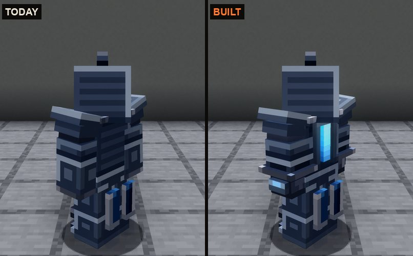
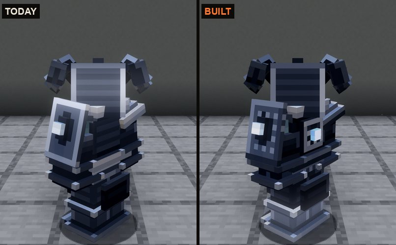
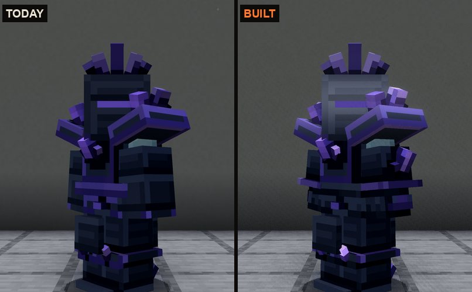
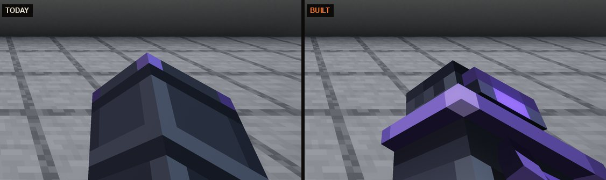
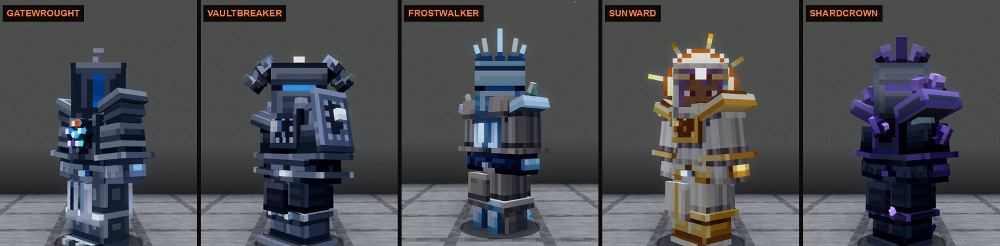
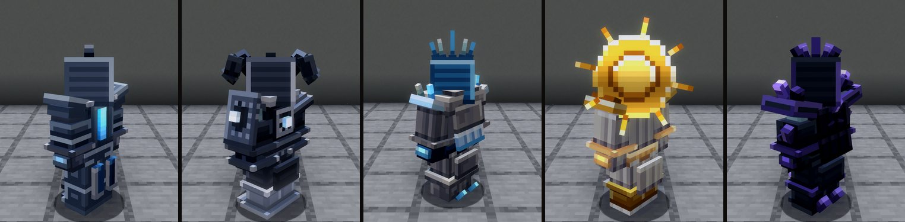
The same kind of change on the eleven sets left: limbs, belts and backs, one feature each where a back is plain, no helm touched. Recommended: yes.
Each strip is one set a second apart, or standing beside moving. They move from the game’s own state, so everyone sees the same and nothing is sent or saved.
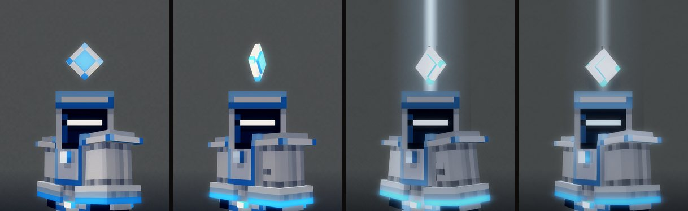
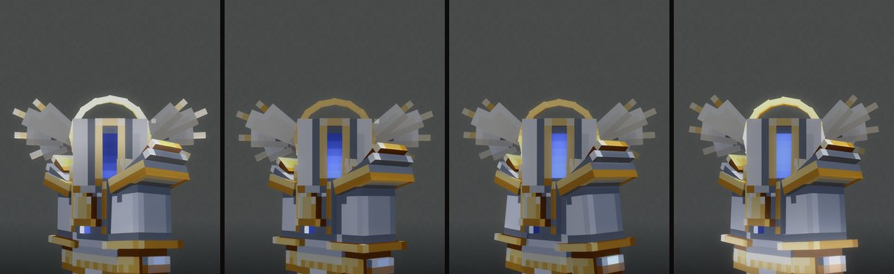
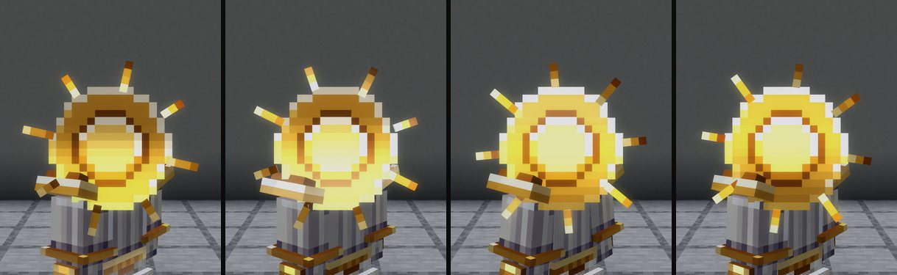
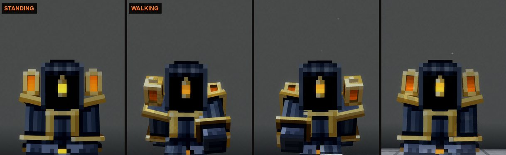
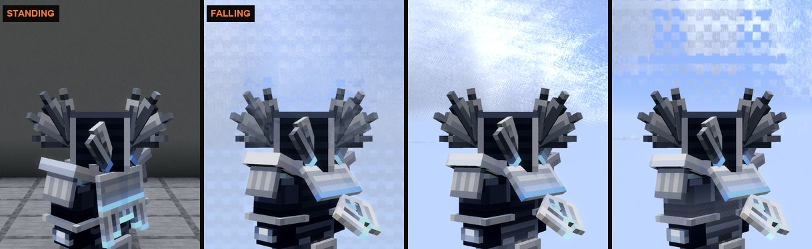
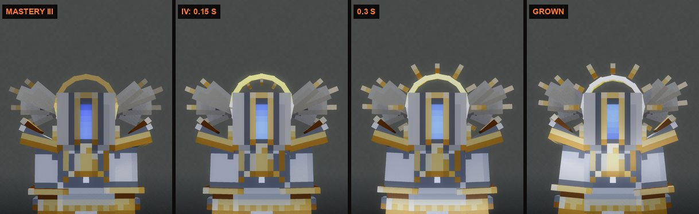
Put the last piece on and the light climbs you, boots first. The first time, the System says in one line what the set does. It also sounds the first three notes of its Forge Song, which you have not heard yet.
The pictures for this part are still being shot on GitHub. They land here when they are.
Armour now shows how it was made, as weapons do. And a piece you hold, drop or frame is drawn as the piece itself.
The pictures for this part are still being shot on GitHub. They land here when they are.
Both of the bigger options you chose are built.
The pictures for this part are still being shot on GitHub. They land here when they are.
python3 tools/art/armour_sounds.py listen, then open http://127.0.0.1:8767. Each of the 45 sounds has three picks; press Use this on one. Pick 1 is in the game until you choose.Not checked anywhere yet: slim-arm skins, the VFX Look, the grips with the weapon-feel session, and how any of it sounds.
All 29 sets were built on one day, 29 October. The six Hunter sets came first and had your eye on them. The other 23 followed straight after, and the time went into helms and silhouettes. That was the right place for it. It also means the same few things were left the same way on nearly every set.
In first person the armour only shows on an empty, idle hand. The moment our own code draws your arm, it draws bare skin. That covers every cast, the wrist band, two-handed moves, and your arms and legs when you climb, vault and slide. The call that dresses the arm was written in October and never connected. Your own set's charge never reaches your own arm either, so everyone can see your armour fill with light except you.
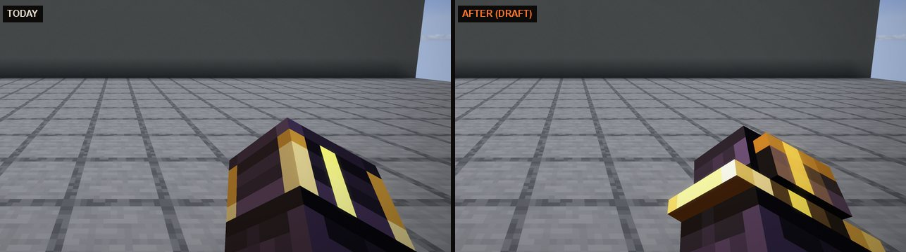
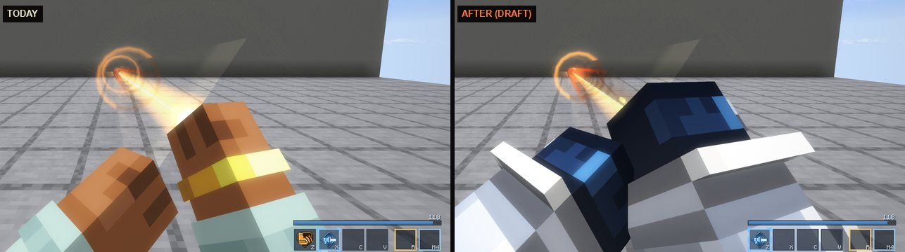
Lordscale's plates use twelve different surface treatments: scales, lames, gold hems, a molten seam. Every C to S set built after it uses three to five, and almost always the same three. Their plates are one panel with a rim. Up close and in your own view that reads as a framed box. Nine sets across the ranks also average out to the same blue-grey.
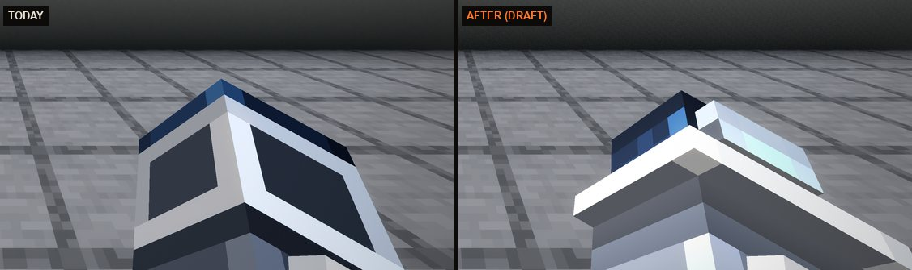
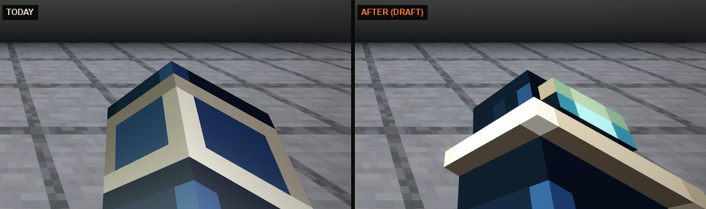
The October rule was "glow is few and placed". It got applied to the one thing a stranger would name, too. Halo Choir's halo, Signal's Echo's marker, Galewing's wings and Sovereign Weave's crown all go dark after sunset. From behind, which is where a friend following you stands, thirteen sets show no light at all. There is also a fault: a pale band of sheen crosses every armoured figure in the dark every five seconds, because the shader adds it after the world's light.
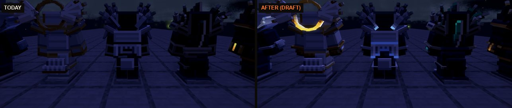
Seven changes. Most are written once and land on all 29 sets at the same time, which is why the pass is small for what it does.
Casts, the wrist band, climbing, sliding. Your own gauntlet fills with light as your set charges and flares when it fires. in the draft
The forearm ends at the wrist in a flared cuff of the set's own trim. Under it a slimmer glove with fingers, and a plate on the back of the hand that carries the set's light from C-rank up. The four sets with a molten line keep it running down the hand. Built from each set's own materials. in the draft
Edges turned to the sky catch a little of it, so plates part from each other. Under an open night sky, metal still catches the moon. Whatever glows spills a little onto the metal beside it. From C-rank up, the thing a stranger would name stays lit at night. E and D stay dark, so rank reads by how much of a set is alight. The crawling band in the dark is fixed. in the draft
On the sixteen later sets the rimmed panel becomes the set's own: riveted vault plate, cut ice, shell segments, feather lames, scales, fluted porcelain, cut mirror. They get elbow and knee pieces where Lordscale has them. The plain backs get one feature each. The blue-grey crowd gets pulled apart. Helms untouched. a first version is in the draft The hand-finishing, set by set, is the real work here and is not.
One or two per set, never more. The halo tilts and breathes. The marker turns. Lantern cages and plumes sway with your step. Wings open when you fall or glide. Shards drift. The rift flickers. Mastery's new parts grow in over half a second. not in the pictures
From Minecraft's own recordings, named, never copied: an equip sound for each material (hide, cloth, mail, plate, heavy plate, crystal, bone, feather), three notes when a set becomes whole (the notes of the Forge Song you made it with), and a soft movement sound by weight that goes quiet when you sneak. The 25 old sounds get remade the same way. I can't hear, so you would get a listening page first, with a best guess and two alternatives per sound. not in the pictures
When the last piece goes on, the seams light from feet to crown and the set's three notes play. The first time, the System says one line. A flaw shows on the plate, a fold shows as a weld pattern, a Flawless piece carries its maker's mark, the same way weapons do. A piece in your hand becomes the real piece, and greaves and boots get icons that read as legs and boots. not in the pictures
Pick a rank and a set. Left half of each picture is the game today. Right half is the draft. The draft holds changes 1 to 3 and a first version of 4. It doesn't hold the hand-finishing, the motion or the sound, so each set also lists what would come later.
Where the draft shows most: from your own eyes, at night, and on the plates of the later sets up close. Worn and seen from ten blocks by day, a set changes little, and that is on purpose. The shapes stay.
This loop is from the art kit's own renderer, not the game, and it is a sketch of change 5: Signal's Echo's marker, Sunward's rays, Halo Choir's halo and wings.
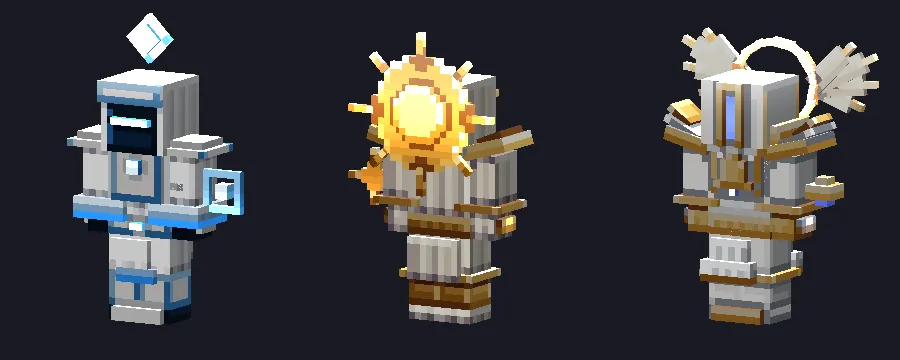
| Material | Sets (examples) | Starts from these Minecraft recordings |
|---|---|---|
| Hide and fur | Wildhide, Hornlord's mantle | leather armour, a saddle, wool underfoot |
| Cloth and robes | Veilwoven, Sunward, Signal's Echo | wool, a bundle, an elytra's rustle |
| Mail and lamellar | Beastbound, Cleftrunner | chain armour, a chain placed |
| Plate | Bladeward, Cloudrunner, Dreamsteel | iron and diamond armour, horse armour |
| Heavy plate | Bellguard, Vaultbreaker, Leviathan, Lordscale, Starfall | netherite armour, an anvil set down, a bell's body for Bellguard |
| Crystal and ice | Shardcrown, Frostwalker, Deepcarapace | amethyst steps and chimes, glass, packed ice |
| Bone and wood | Hollowheart, Rootwarden | bone block, bamboo wood, a skeleton's rattle |
| Feather | Galewing, Halo Choir | an elytra, a phantom's flap, a parrot's wing |
These are starting points to audition. A row only stands once you've heard it in the game.
None of these is in the recommendation. Each can be added to it.
| Option | What you'd get | Cost at our pace |
|---|---|---|
| Admire | Hold a key and the camera circles you once in a hero light. The cheapest way to enjoy a set you made. | half a day |
| Abilities that use the suit | Galewing's wings beat on Gust. The halo rings on Hymn. The rift opens on Riftstep. Starfall's seams blaze on Meteor. One for each of the 29. | two days |
| Show your face | A switch in Looks: wear the helm, or only its crown and horns. | half a day |
| Footprints and trails | Frost prints, embers, feathers. One for each set from A-rank up, with our own particles. | a day |
| Many players | Lighter far-off versions of each set, and a measured run with 20 armoured figures on your Mac. It only matters for the server dream. | a day |
Two things I looked at and would not do: new helms for the weaker sets (it breaks your own rule and risks the faces you rejected), and denser textures or smooth meshes (the road the clunky look went down, and it would split armour from the weapons).
About five days of one session. Stages 0 to 2 fit in the first. Each stage lands on its own with green tests and a set of game shots checked one by one for clipping, floating parts and scale, and each can be taken back out by itself. Item ids and saves never change. Before anything is built I merge the new K menu in, since it changes the Status page this plan touches.
What could go wrong. The hand change touches every set you have seen, which is why all 29 are shown before and after below your eyes first. Sound is made without ears, so yours are the gate. Moving parts can swing through the body, so each one gets a sweep check. Three other plans work in the same first-person code. Notes are exchanged and the shared part goes in one neutral place.
Not measured. What many armoured players cost in frames. The October plan's measuring pass never ran. One suit is cheap. Twenty in view is unknown.
Recommended: yes. If you only want the faults fixed, choose stage 0 only.
Every set gets a cuff, a slimmer glove and a hand plate, Lordscale and Sovereign Weave included (they keep their molten line). Look at the “your own eyes” picture on a few sets first. Recommended: yes.
From C-rank up the named feature stays lit. E and D stay dark. Halos, sun discs, crowns and wing edges glow by day too. Recommended: yes.
A soft sound of your armour as you move, quiet when you sneak, with its own volume slider. Recommended: on by default, low.
Limbs, belts and backs only. No helm changes. You see C-rank before the rest. Recommended: yes.
Recommended: Admire, and Abilities that use the suit, after the pass. Pick any.
It launches the game client there for a few minutes, with 20 armoured figures. Recommended: yes, when the shaders session isn’t measuring.
You can also just answer in chat.
How this was checked: the armour code, shader and art kit read end to end. Every set rendered with the kit. 191 shots of the game today and 191 of the draft, same script, on GitHub's macOS runners with Lens on Cinematic. Draft branch claude/armour-polish-plan-5e3628, marked not for merge. Full record in docs/armour/polish/PLAN.md. The draft's light was only shot on Cinematic. Swift and the VFX look are unchecked.